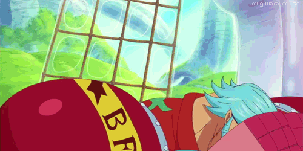

Who is Franky?
Franky, also known as "Cutty Flam," is a fascinating and unique character in the One Piece universe. He is a cyborg who initially appears as a villain, but eventually becomes an ally and member of the Straw Hat Pirates. Franky is a shipwright, which means that he is responsible for designing and building ships. He is an expert in shipbuilding, having designed and built the Thousand Sunny, the Straw Hat Pirates' ship.
Franky's cyborg body is one of the most impressive in the One Piece world. He has a number of built-in weapons, including rocket launchers, cannons, and laser beams. He also has an incredible amount of strength, which he uses to great effect in battles. Despite his fearsome appearance, Franky is a kind and loyal friend. He is fiercely loyal to his friends and crewmates, and will do anything to protect them.
One of the most interesting things about Franky is his love for fashion and music. He is always decked out in outrageous outfits, and has a passion for disco music. He even has a built-in speaker system in his body that he uses to blast his favorite tunes. Overall, Franky is a unique and charismatic character who brings a lot of personality and humor to the One Piece universe.